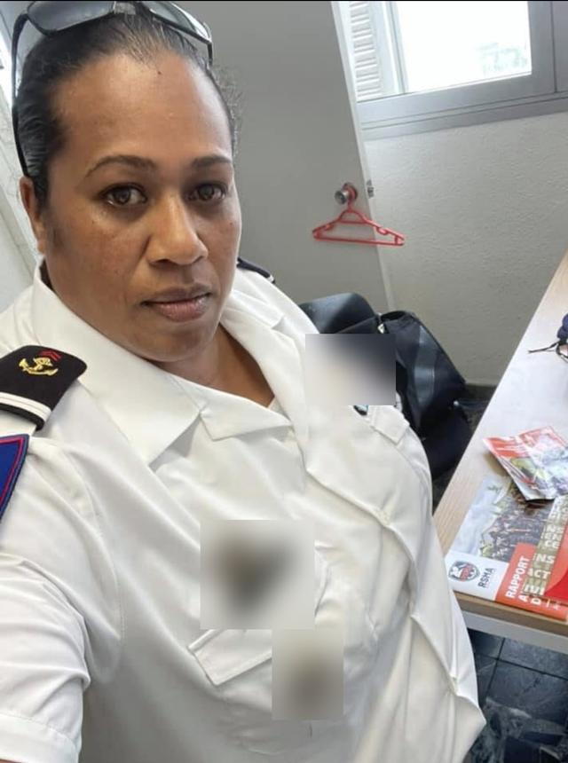
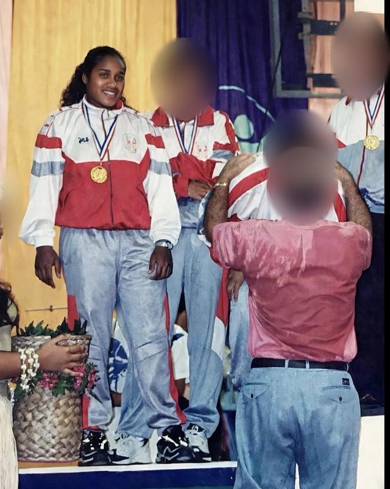
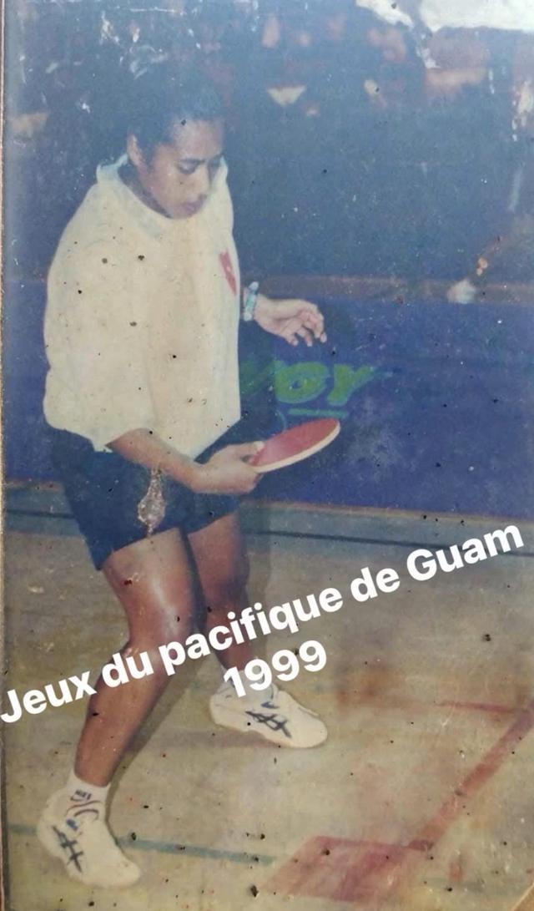
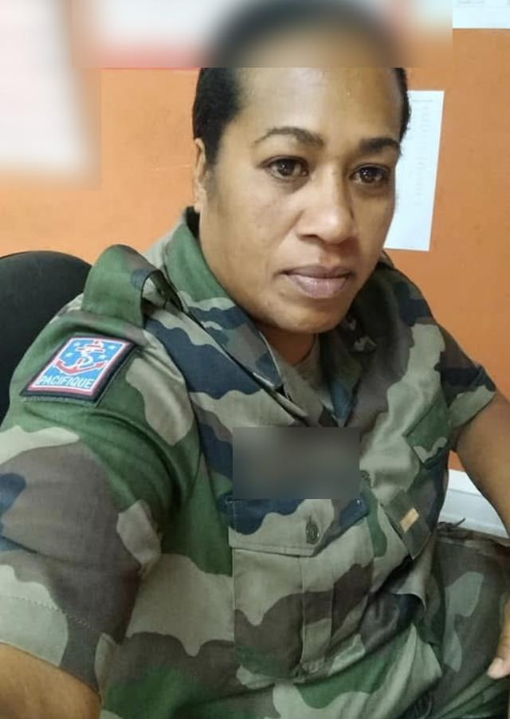
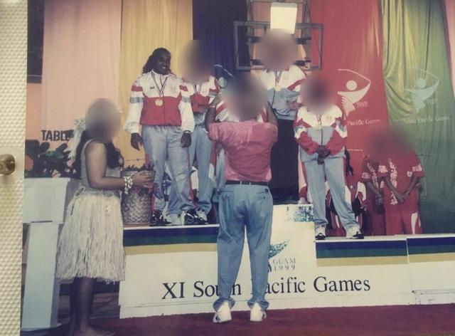
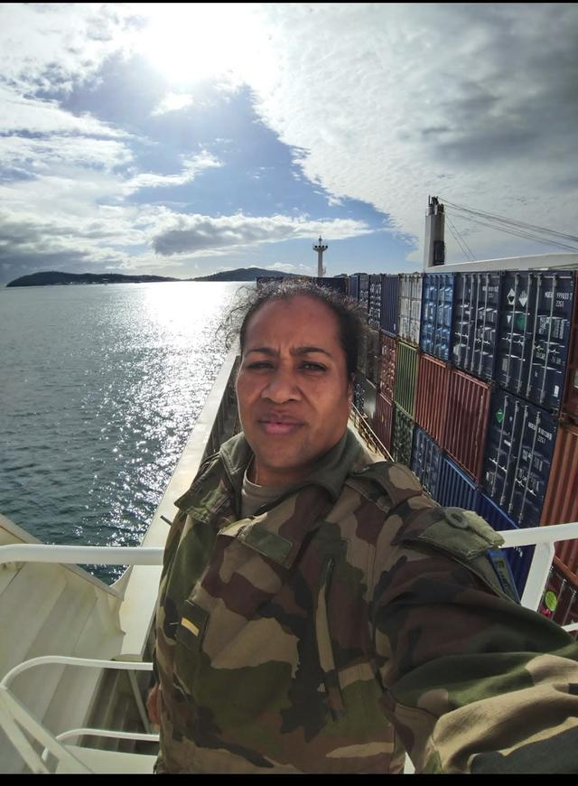
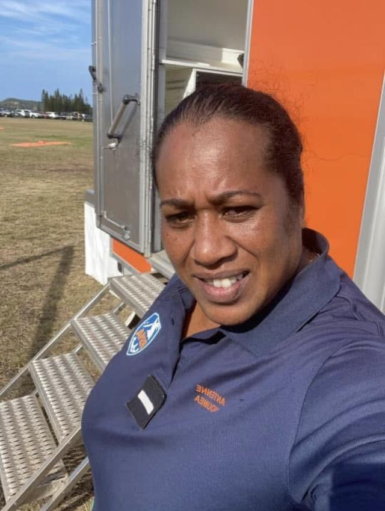
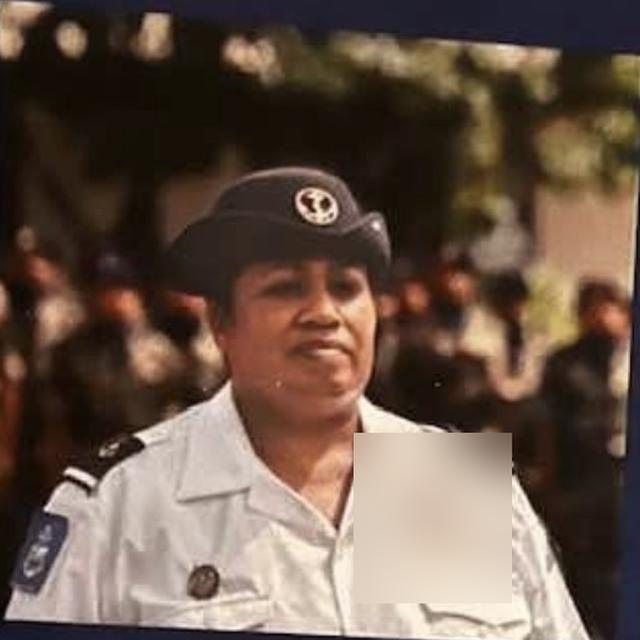

Choisis ce que tu as fait : les compétences s'écrivent toutes seules, d'après les fiches métiers officielles (ROME). Rien n'est envoyé.
Aperçu de ton CV
Relis bien : pas de faute, pas de numéro faux. Fais-le relire par quelqu'un de confiance.
Compétences inspirées des fiches du Répertoire opérationnel des métiers et des emplois (ROME), utilisé par la DTE en Nouvelle-Calédonie. Pour trouver le bon code métier : DTE, 27 55 72.
Crée un compte gratuit sur canva.com ou l'appli Canva.
Tape CV dans la recherche.
Choisis un modèle simple sans petite couronne (couronne = payant).
Touche 2 fois un texte pour le remplacer par le tien.
Photo : « Importer », puis glisse-la sur la photo du modèle.
Relis tout, surtout ton numéro et ton mail.
Partager → Télécharger → PDF standard.
Nomme le fichier CV_Prénom_Nom.pdf et envoie-le toi par mail.
Astuce : remplis d'abord « Je le fais ici », appuie sur « Copier le texte de mon CV », puis colle dans Canva.
À éviter : mail pas sérieux, plus d'une page, fautes, photo du CV prise au téléphone (envoie le PDF).
Monter mon projet
Mon projet : dans quel ordre ?
Règle d'or
D'abord je me forme, ensuite je crée
Guide, transport de clients, cuisine pour le public… beaucoup de métiers demandent un diplôme ou une carte pro avant d'être payé. Demande à l'EPIFE lequel.
Écris ton idée : fiche projet plus bas.
Forme-toi : EPIFE (stage SDM, SQE, aide à la formation).
Accord du clan et de la chefferie si terre coutumière.
Lance-toi : EPIFE, contrat CILIE (18–60 ans, payé pendant l'installation).
Gère : Case de l'entreprise · 45 19 90 · cdelifou@mls.nc
Finance : Province (code de développement), SODIL / Soparil, ADIE, Initiative NC.
EPIFEOrienter, former, contrat CILIE
DTEFPDiplômes calédoniens, formations (PIF)
GouvernementCarte pro d'éducateur sportif
Case de l'entrepriseComptabilité, gestion
Province des ÎlesAides à l'équipement
SODIL · SoparilArgent : capital ou avance
ADIE · Initiative NCMicrocrédit, prêt d'honneur
CoutumeAccord pour la terre, les sites
Exemple : devenir guide de randonnée à Lifou
Stage découverte (SDM) chez un guide, via l'EPIFE.
Diplôme calédonien : Accompagnateur de sortie pédestre ou Guide de randonnée pédestre (niveau 4).
Prérequis guide : anglais A2, informatique, certificat médical, casier vierge, test de ~6 km en 2h30 avec sac.
Financement : EPIFE (aide à la formation, SQE) ou DTEFP (PIF).
Premiers secours.
Carte pro d'éducateur sportif (obligatoire pour être payé) : diplôme + casier + assurance.
Accord coutumier pour chaque sentier, puis l'entreprise.
Aucun organisme n'est encore habilité à former au Guide de randonnée pédestre : demande les prochaines sessions à l'EPIFE et à la DTEFP.
Outil
Ma fiche projet (7 questions)
Études
Études : les parcours qui aident
Juvénat
Lycée · Nouméa
Qui
Lycéens de la seconde générale à la terminale, des 3 provinces
À vérifier au 45 50 00, sinon lors d'un séjour à Nouméa
Apporter
Photo < 3 mois · acte de naissance · justificatif de domicile (en tribu : attestation d'hébergement)
Délai
Environ 1 mois · retrait sous 3 mois
Passeport
Timbre fiscal
Où
Même démarche que la carte d'identité
Prix
Timbre : 3 000 F (majeur) · 1 500 F (15–17 ans) · gratuit avant 15 ans
Timbre
Agence OPT ou recette des impôts à Nouméa
Délai
Environ 1 mois
Jamais de timbre en euros sur internet : il ne marche pas ici.
Permis de conduire
Commence par le code
Économique
Code seul avec le livre du code calédonien, inscription en ligne DITTT
Classique
Auto-école (Lifou : Les Nautiles) : compare les devis
Payer
Redevance à la DITTT (plus de timbre depuis juin 2025)
Qui aide
EPIFE (orientation), DITTT (examen)
Moins de 18 ans : un parent vient avec toi, avec sa pièce d'identité.
Mon classeur toujours prêt
Prendre soin de moi
Santé : sans honte
Alcool, cannabis
Moins de 25 ans
DECLIC · 25 50 78 · gratuit et anonyme
Plus de 25 ans
CSAPA · 24 01 66 · gratuit
À Lifou
Centre médico-social de Wé · 45 12 12
À toute heure
SOS Écoute · 05 30 30
Lire et écrire
Tu n'es pas seul
1 adulte sur 5 a du mal à l'écrit en Nouvelle-Calédonie
Qui aide
EPIFE (remise à niveau) · RSMA (lecture et calcul inclus)
Se soigner à Lifou
Où
Centre médico-social de Wé · 45 12 12
Horaires
Lun–jeu 7h30–16h, ven jusqu'à 15h30 · urgences 24 h/24
Sans CAFAT
Aide médicale gratuite de ta province
Ces fiches ne remplacent pas l'avis d'un médecin. Urgence : 15.
Tu n'es pas seul·e
Besoin d'aide maintenant
Ce qui t'arrive n'est jamais de ta faute.
En danger maintenant ?
15SAMU, urgence médicale
17Police, gendarmerie
18Pompiers
05 30 30SOS Écoute : gratuit, anonyme, même sans crédit
05 11 11SOS Victimes : gratuit, toutes les violences
SOS Écoute répond du lundi au samedi de 9h à 1h, le dimanche de 9h à 13h et de 17h à 1h.
Idées noires
Maintenant
Parle à quelqu'un : un proche, SOS Écoute 05 30 30
Danger
Appelle le 15
Un ami en parle
Prends-le au sérieux, reste avec lui, appelez ensemble
Harcèlement, coups
Garde
Captures d'écran, messages, photos des blessures
Appelle
SOS Victimes 05 11 11 · Police 17
Soins
Centre médico-social de Wé
Viol, violences sexuelles
D'abord
Va vite voir un médecin (CMS Wé, urgences 24 h/24), même sans porter plainte
Aide
ADAVI 27 76 08 · SOS Victimes 05 11 11
Coutume
Case Juridique Kanak 94 92 59
Bouger
Sport : à ton rythme
23 %des jeunes Calédoniens de 18 à 24 ans sont obèses (2022)
9 %en métropole pour le même âge
66 %des Calédoniens sont en surpoids
Outil
Mon cœur, mon IMC et mon programme
Entre ton âge, ton poids et ta taille : tout se calcule automatiquement, au fur et à mesure. Ce n'est pas un jugement, c'est un point de départ. Rien n'est envoyé ni enregistré : le poids et la taille s'effacent quand tu quittes la page.
Prendre son pouls, sans montrePose deux doigts sur le côté du cou ou à l'intérieur du poignet. Compte les battements pendant 15 secondes, puis multiplie par 4.Le test de la paroleSi tu peux parler en phrases complètes en marchant ou en courant, tu es à la bonne allure. Si tu ne peux dire que quelques mots, ralentis.
Mon programme de 8 semaines
Ceci n'est pas un avis médical.Avant de commencer : si tu as une maladie (cœur, asthme, diabète…), beaucoup de poids à perdre, ou si tu ressens une douleur dans la poitrine, un vertige ou un gros essoufflement, arrête-toi et fais-toi examiner au centre médico-social de Wé (45 12 12).
Préparer ma visite médicale
RSMA · CIRFA · police
1. Dentiste
Soigne toutes tes caries (1ʳᵉ cause d'inaptitude dentaire). Bien mâcher = dossier solide. Garde l'attestation.
2. Vaccins
Montre ton carnet à un médecin : il fait le rattrapage. Perdu ? Parents, ancien collège, CMS.
3. Classeur
Carnet, attestation dentiste, lunettes ou ordonnance
Où à Lifou
CMS de Wé · 45 12 12 (cabinets dentaires de la Province, ex. Mou)
Prix
CAFAT : remboursé · sans CAFAT : aide médicale gratuite de ta province
Inapte « temporaire » ? Fais les soins demandés et représente-toi.
Manger mieux
Boire
L'eau d'abord, les sodas pour les fêtes
Manger
Igname, taro, poisson, légumes du champ
Cuire
Moins de friture, plus de bougna, four, eau
Rythme
Repas réguliers, petit-déjeuner compris
Sports seul ou entre amis
Gratuit
Marche rapide, course, pompes, gainage
Lagon
Natation, palmes : jamais seul
Club
Demande à la Province ou à la DJS
LuecilaWetr · Lifou
Qui suis-je

Sabrina Waneisi, femme de Drehu
Mariée à Luecila, mère de trois enfants, athlète de haut niveau puis 24 années dans l'armée de Terre. Une vocation : transmettre.
« S'élever par l'effort »devise de l'École de Saint-Maixent, et la mienne

Médaille d'or, Guam 1999

En match aux Jeux du Pacifique

Troupes de marine, Pacifique

La sélection calédonienne sur le podium des XIᵉ Jeux du Pacifique Sud

En mission avec le transit maritime

RSMA, antenne de Nouméa

Distinction
« Pépite du mois de mai » du RIIFE, 2022
Mon parcours présenté en exemple par le réseau calédonien de l'insertion, de la formation et de l'emploi.
Pourquoi ce site ?
Au RSMA, j'ai vu des jeunes pleins de talent bloqués par un dossier, ou par la honte de demander. Ici, tu trouves la carte, les étapes et les adresses. Tu arrives préparé, on te prend au sérieux.
Mon parcours complet
Le sport m'a forgée
Tennis de table, de benjamine à senior. La discipline, la persévérance, l'esprit d'équipe et le goût du défi.
1988 – 1991BenjamineChampionne de Nouvelle-Calédonie. Premiers pas de pongiste à Tours.
1992 – 1993MinimeChampionne de Nouvelle-Calédonie et de Nouvelle-Zélande.
1994 – 1995CadetteChampionne de Nouvelle-Calédonie, de Nouvelle-Zélande et d'Océanie.
1996 – 1997SeniorChampionne de Nouvelle-Calédonie, vainqueur du tournoi international de Koumac, championnat du monde à Manchester.
1999Jeux du Pacifique, GuamPour la Nouvelle-Calédonie.Or par équipeOr double damesBronze double mixte
2002Toujours en compétitionSimple dames, double dames et par équipe.
24 années dans l'armée de Terre
Du pays jusqu'en métropole, et retour au pays pour accompagner les jeunes.
Avant 2002Bac secrétariat-comptabilité, puis préparation militaire parachutisteLe goût de l'effort m'a menée vers le monde militaire.
2002 – 2004Engagée volontaireRégiment d'infanterie de marine du Pacifique – Nouvelle-Calédonie, cellule recrutement
2005 – 2008Cheffe de groupe d'instruction121ᵉ régiment du train, Montlhéry
2008 – 2018Cheffe du parc automobile519ᵉ régiment de transit maritime et 4ᵉ régiment de dragons, Toulon et Carpiagne
2018 – 2019Cheffe du service général519ᵉ régiment, Toulon
2019 – 2020Adjudante d'unité d'une compagnie519ᵉ régiment, Toulon
2020 – 2023Conseillère en insertion professionnelle et cheffe de cellule insertionRSMA de Nouvelle-Calédonie, antenne de Nouméa. J'ai accompagné des jeunes du pays vers l'emploi et travaillé avec les entreprises.
2023 – 2026Cheffe de cellule planification du matérielRégiment médical, La Valbonne
2026ReconversionFormation de Responsable de petite et moyenne structure (niveau 5).
À ne pas rater
L'agenda des jeunes
Mis à jour le 27 septembre 2026. Les dates « à confirmer » suivent le calendrier des années précédentes.
27–28 oct.2026
RSMA-NC à Lifou : tests de sélection
À l'EPIFE, de 8h à 11h30 et de 13h à 16h30. Pour les 18-25 ans, avec convocation : inscris-toi avant à l'EPIFE ou au RSMA.
29 oct.2026
RSMA-NC : tournée d'information à Lifou
Le matin, sur différents sites de Lifou.
1ᵉʳ oct.2026
Ouverture des inscriptions job d'été Province Sud
Pour les jeunes qui résident en province Sud, dont les étudiants îliens à Nouméa.
21 oct.2026
Job dating Province Sud
Au centre Ko We Kara, Nouméa.
Nov.2026
Inscriptions job d'été EPIFE
Dossier par mail à emploi-ete@epefip.nc ou à l'EPIFE.
À confirmer
16 nov.→ 14 fév.
Jobs d'été Province Sud
Période de travail 2026-2027.
MaintenantJuvénat
Candidature Juvénat pour la rentrée 2027
Le dossier de la rentrée 2026 était sorti en août 2025. Vérifie sur juvenat.nc.
À confirmer
Fév.2027
Cadres Avenir, candidatures étudiants
Sur gip-cadres-avenir.nc.
À confirmer
Mai2027
Semaine de l'orientation
Dans les collèges et lycées (en 2026 : du 18 au 22 mai).
À confirmer
Août2027
Cap Horizons et Cadres Avenir professionnels
Salon des études supérieures, avec une étape à Wé (le 1ᵉʳ août en 2026).
À confirmer
Mentions légales et confidentialité
Qui fait ce site, et ce qu'il fait de tes données
Mentions légales
Nature du site : site d'information gratuit et non commercial pour la jeunesse de Lifou. Il n'a aucun lien officiel avec l'EPIFE, la Province des Îles Loyauté, la Province Sud, le gouvernement de la Nouvelle-Calédonie ou les autres structures citées, et ne parle pas en leur nom.
Éditrice et directrice de la publication : Sabrina Waneisi, à titre personnel.
Contact :sabwaneisi8@gmail.com
Hébergement : GitHub Pages, GitHub, Inc., 88 Colin P. Kelly Jr. Street, San Francisco, CA 94107, États-Unis.
Informations : elles sont données à titre indicatif, avec leur date et un lien vers la source officielle. Les conditions et les dates peuvent changer : vérifie toujours auprès de l'organisme concerné avant une démarche. Les liens mènent vers des sites extérieurs dont le contenu ne dépend pas de ce site.
Ce site ne te demande rien. Pas de compte, pas de formulaire envoyé, pas de cookie publicitaire, pas d'outil de mesure d'audience pour l'instant.
Ce qui reste sur ton téléphone : ton choix dans « Par où je commence ? », les cases cochées, ta fiche projet, le texte de ton CV et ton âge dans l'outil sport sont gardés uniquement dans ton navigateur, pour les retrouver à ta prochaine visite. Ils ne sont jamais envoyés à personne, même pas à l'éditrice. Le poids, la taille et la photo de ton CV ne sont jamais gardés. Le bouton « Télécharger mon CV en PDF » fabrique le fichier directement sur ton téléphone.
L'hébergeur (GitHub) peut enregistrer des informations techniques de connexion (comme l'adresse IP) pour faire fonctionner et sécuriser le service, selon sa propre politique de confidentialité.
Rubrique « Bravo à nos jeunes » : elle reprend uniquement des réussites déjà publiées par des sources publiques (presse, organismes officiels), avec le lien vers la source. Pour les moins de 18 ans, seul le prénom est indiqué.
Tes droits : selon le RGPD et la loi Informatique et Libertés, tu peux demander à voir, corriger ou retirer une information qui te concerne (nom, photo, mention), ou t'opposer à sa publication. Écris à l'adresse de contact ci-dessus : la demande est traitée dans un délai d'un mois au plus. Tu peux aussi saisir la CNIL (cnil.fr).
Si une mesure d'audience est ajoutée plus tard, elle sera sans cookie, sans publicité et annoncée ici avant sa mise en place.
Dernière mise à jour de cette page : 26 septembre 2026.